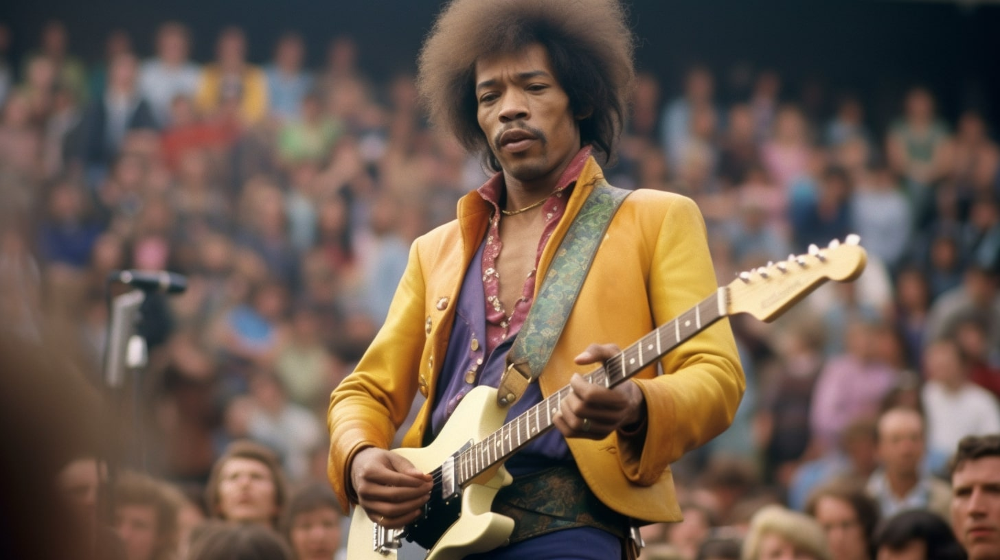
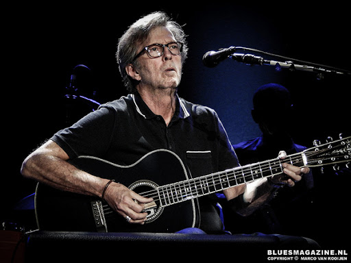
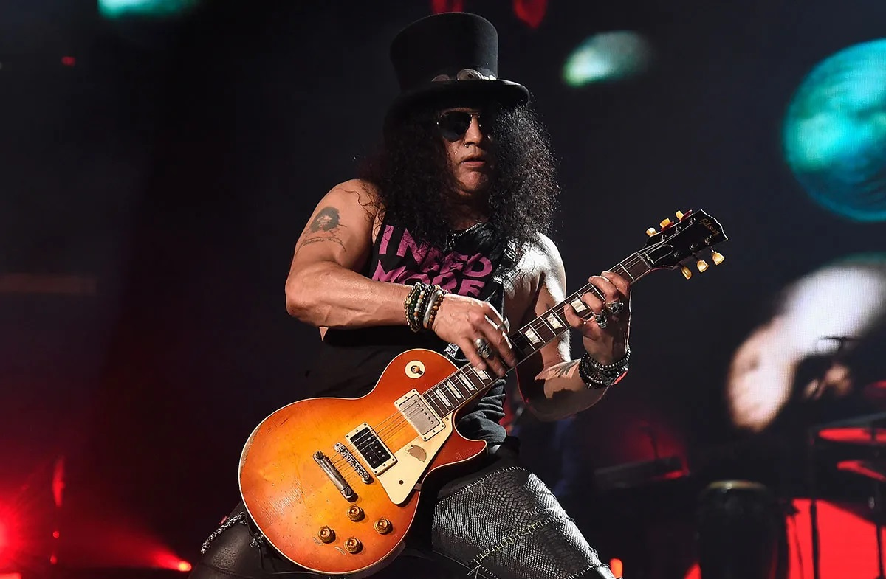

Jimi Hendrix
Jimi Hendrix byl americký kytarista, zpěvák a skladatel, který je považován za jednoho z největších kytaristů všech dob. Jeho inovativní techniky hry na elektrickou kytaru, jako využití zpětné vazby (feedback) a zkreslení (distortion), navždy změnily svět rockové hudby. Mezi jeho nejslavnější skladby patří Purple Haze, Hey Joe a All Along the Watchtower.
Eric Clapton
Eric Clapton je britský kytarista, zpěvák a skladatel, často označovaný přezdívkou „Slowhand“. Je známý svou jedinečnou schopností kombinovat bluesové prvky s moderním rockem a jeho hity, jako Layla, Tears in Heaven a Wonderful Tonight, patří k největším klasikám. Clapton je jediným hudebníkem, který byl třikrát uveden do Rock and Rollové síně slávy.
Slash
Slash, vlastním jménem Saul Hudson, je legendární kytarista a skladatel, známý především jako člen kapely Guns N' Roses. Jeho ikonická sóla v písních jako Sweet Child o' Mine, November Rain a Welcome to the Jungle ho zařadila mezi největší rockové kytaristy všech dob. Slash je také známý svým jedinečným stylem hry, charakteristickým zvukem Les Paul kytary a nezaměnitelným kloboukem.
